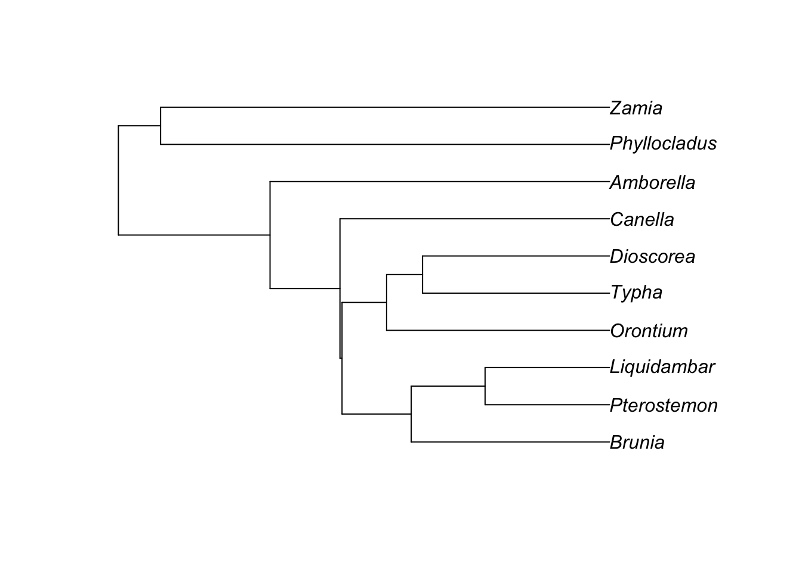

Chapter 10 Discrete Traits
##Objectives
By the end of this chapter, you will:
- Understand how to incorporate rate heterogeneity in discrete trait models
- Be able to explain how to test hypotheses about univariate trait evolution.
Many traits can be thought of as discrete traits: a DNA site comes in ATGC, protein have one of 20 amino acids, some animals have functional eyes and others do not, some plants are woody and others are herbaceous. This is nearly always an approximation. Think of something like limbs: they seem distinct enough that we even name some groups by their count: tetrapods, hexapods. Except that when we look closely enough, it becomes fuzzy: insect mouthparts are derived from limbs, for example, so should we count these highly modified limbs as limbs (and if not, where in evolution have they become sufficiently modified to no longer count? And are nymphalid butterflies tetrapods under that definition yet?). Are modern whales thought to have four limbs, even though two are extremely vestigial? Often for neontologists problematic organisms with intermediate counts are conveniently extinct (so long, Basilosaurus), so we can ignore this fuzziness, but it is often there (and paleontologists are confronted with it more often). Think about the details of a species changing from one discrete state to another, even for something like a seemingly perfectly discrete character like a base changing from an A to a T. At first this is present in just a single individual (for a multicellular diploid, on one DNA strand in one cell in the germ line). Even if under selection, it will take generations to sweep through to fixation: during that time, what is “the” state of the species? It is even harder to discretize characters like woodiness (how much wood is required?), eyes (when does a fish population evolving in a cave finally “lose” its eyes?), biogeography (how finely do you divide the range: by continent? biome? state?), and so forth.
As for many decisions, this comes back to the biological hypotheses being tested and the size of the study. For example, one question could be does a complex trait like wings ever re-evolve once lost? (Whiting2003?) examined this in stick insects: some species have wings in both sexes, some in one only, and some lack wings in both sexes. If the question hinges on whether loss of wing genes in a species prevents re-evolution, then as long as one sex in a species has wings the species should be coded as having wings. If the question hinges on the effect of loss of wings on ability to settle new areas, it could be that having either sex lack wings is enough to prevent effective colonization, and thus a species with only one sex with wings should be coded as being wingless. If the study system is large enough to have sufficient power, one could code this as a four state character, instead: A: both males and females have wings; B: males have, females lack wings; C: males lack, females have wings; and D: both males and females lack wings.
One way to deal with this is to gather discrete data as finely divided as reasonable and then aggregate. For example, in the stick insect example, code it as a four state character as above and then, depending on the biological question, group them. If the question is whether wings can reappear after being entirely lost, for example, one would group A, B, and C as having wings (in at least some members of the species, so the genes remain under selection for functionality) and D as wingless, but for the dispersal question one could lump B, C, and D, leaving A as the other state, or even lump B and C only.
| males | females | four_states | question_1 | question_2a | question_2b |
|---|---|---|---|---|---|
| wings | wings | A | 1 | 1 | 2 |
| wings | wingless | B | 0 | 1 | 1 |
| wingless | wings | C | 0 | 1 | 1 |
| wingless | wingless | D | 0 | 0 | 0 |
But, let’s assume we can discretize traits and carry on. The simplest discretization is binary: 0 or 1, often absence or presence (but could be yellow or blue, etc.). Most models are like our commonly used DNA models: continuous time with discrete changes, using the same rates throughout. It is like a model for when an autonomous car will have an accident: assuming the car works perfectly (gives a whole new meaning to “blue screen of death”) there’s still a chance that at some point a human is going to run into it. There’s a per hour chance of an accident: let’s assume in each hour there’s a 0.03% chance of our autonomous car having an accident (very roughly based on Google’s experience, assuming a 40 MPH average speed). So the probability of having no accident in the first hour of driving is 99.97%; the probability of having no accidents in the first 40 hours of driving is 99.97% ^ 40 = 98.8%. The number of accidents is Poisson-distributed; the wait time between accidents is exponentially distributed. This is the model commonly used in phylogenetics for discrete traits, though sometimes with more complexity: one could move (with some rate) between two different rates, as in a covarion model, for example. A very different model is Felsenstein’s threshold model, which we will discuss in a few weeks. For now, though, just envision models with a fixed rate of change between states as long as other characters don’t change; it’s possible, though, that the state of other characters do affect these rates (which is what correlation tests investigate). For example, the probability of switching from clawed feet to flippers for forelimbs is probably much higher for species that live in water than on land.
(btw, note the spelling here: having one, two or eight eyes is a discrete trait: individually separate and distinct. Forming an enclosed bower for hidden mating is a discreet trait. The former is generally far more biologically relevant).
Discrete trait models typically assume that change from one state to another happens in one step. Time is continuous (per instant, rather than change per generation, per year, etc.). Usually the process is memoryless: there’s no cooling-off period during which a trait can’t change back, for example (there are seeming exceptions, like the threshold model (Felsenstein 2012), though these often are memoryless when you look more deeply (like in the liability in the threshold model)). This memoryless property makes this a Markovian model. So, overall, these are discrete state continuous time Markov chain models (DSCTMC) (O’Meara 2012). When in one state, there’s an exponentially distributed wait time until a change to some other state. An example of this is radioactive decay: an atom of carbon-14 sitting patiently in a sugar molecule, until at some point it decays to form a nitrogen atom. It might happen in a second, it may happen in 100 years, it may happen in 10,000 years. The faster the decay rate, the less time on average until it changes. For atomic decay, we often talk about half life (1/rate): this can be done for phylogenetics, too [note this is distinct from phylogenetic half life for Ornstein-Uhlenbeck models – see that chapter]. This can give an intuitive sense of time to a change: is there a 50:50 chance the trait has changed after 10 MY (reasonable) or after 0.0001 years (seems a bit fast for most traits)?
It’s possible a trait can have more than two states. Take DNA: an A could change to a T, to a G, or to a C. There could be three rates: rAT, rAG, rAC for changes from A to T, A to G, and A to C respectively. The rate it changes at all is the sum of these: rA_ = rAT + rAG + rAC. The probability that the change is A to T when it does change is just rAT / (rAT + rAG + rAC).
It is often convenient to arrange the instantaneous rates into a table. Each row represents a starting state, and each column represents an ending state. Each cell is the instantaneous rate of going from the row state to the column state:
| A | T | G | C | |
|---|---|---|---|---|
| A | - | rAT | rAG | rAC |
| T | rTA | - | rTG | rTC |
| G | rGA | rGT | - | rGC |
| C | rCA | rCT | rCG | - |
Though the above example is for DNA, one could do the same with amino acids, ability to fly, having eyes, growth form, trophic level, etc.
Once we have this matrix, we can do a few cool things with it. One is to calculate the probability of starting in one state and ending in a particular state over some time t. This is frankly amazing: think of the ways one could start in A and end in T. One could change from A to T exactly at the middle of the time interval. Or, this could happen 10% of the way along the branch. Or, one could change from A to G a third of the way up and then G to T a bit further along. Or could go from A to T to A to T. Etc. There are an infinite number of paths one could take to get from A to T. However, by simply taking the instantaneous rate matrix, Q, multiplying each cell by t, and taking the matrix exponential of this, we can integrate over all these paths to get the probability matrix P, where the entry for row i, column j is the probability of starting in state i and ending in state j over time t.
With a way to calculate probability, all manner of wondrous things become available. For example, take this very simple tree:

What is the probability of the data (the likelihood) of this tree? Well, we have two paths: from A at the root of the tree to A over a time of 0.7, and from A at the root of the tree to G, also over a time of 0.7. If we know the instantaneous rates, we can take the matrix Q, do P = expm(Q times t), and calculate the probability of A to A and A to G paths. Multiply those two probabilities together than that is the probability of seeing A and G at the tips and A at the root given the instantneous rates: that is, we’ve calculated the likelihood of the tree. We could try changing the branch length from 0.7 to 0.71 or 0.69, repeat, and continue trying branch lengths until we find a branch length that maximizes this probability: that’s finding the maximum likelihood optimum branch length. If we do not want to assume an A at the root, we could calculate the probability of the data assuming a T at the root, assuming an A, assuming a G, and assuming a C, weight each probability by our expectation of seeing each root state (for example, if we assume we know nothing a 1/4 chance of each state) and get the weighted sum. This is how likelihoods of trees are calculated in general. For larger trees, we essentially do the same thing, trying all possible combinations of states at each node (there’s actually a faster but equivalent algorithm, known as tree pruning or tree peeling, developed by Felsenstein that’s used in practice). If we want to estimate the state at one particular node (the marginal ancestral state estimate), we integrate (add) over all possible combinations of states at other nodes but trying each possible state at our focal node to find the likelihood of the data given each state – this is ancestral state estimation. If we want to compare two different trees, we calculate the probability of the data on each tree and compare them. Combined with a way of proposing new trees, this is a likelihood tree search algorithm.
In the same way we can try different branch lengths and get different likelihoods to find the optimal branch length, we can try different rates and try to get the ones that maximize the probability of the data. Many questions relate to these rates. Is the rate of gaining eyes lower than the rate of losing eyes? To answer, find the values that maximize the likelihood, see if the gaining eyes rate is lower. It can be helpful to compare rates under a model where they are allowed to vary with models where they are forced to be the same: for example, we can set the gain rate to equal the loss rate and see how much worse that is. This is also one way we simplify models: either by forcing some paramter values to have the same rates or by forcing some rates to be a fixed value (usually zero). For example, for DNA models, a common one is to assume that the rate of going from state i to j is the same as going from j to i: this is known as a general time reversible model. This often fits almost as well as a model with all transition rates allowed to vary, but has half the number of parameters to fit. An even simpler model, the Jukes-Cantor model, forces all rates from one nucleotide to another to be equal. One can also ask about direction of transitions: is it always 0 -> 1 -> 2, or are 0 -> 2 changes possible directly? To examine this, compare models with r02 forced to be zero and see how much worse they are than models with unconstrained rates.
Ancestral state estimation is a common desire for biologists. There are multiple ways to estimate these states. The first question is where the states are estimated (adopting the jargon of Steel and Penny (2000)). The likelihood calculated by averaging across all states everywhere (except terminals), as we do when finding the best tree, is known as maximum average likelihood. For ancestral state estimation, it is typical to estimate states at nodes: this is known as most-parsimonious likelihood. Note that estimating states at the nodes takes two forms. The less common, but which is the one matching the most-parsimonious likelihood approach, is a joint reconstruction: find the set of states across all nodes that together maximize the likelihood. It’s like asking what your favorite meal is: maybe a hot dog, with mustard, on a grilled bun with a side of potato salad and a side of baked beans. More common is a marginal reconstruction: estimate the best state at each node, averaging across all other states at other nodes. It’s equivalent to asking about your favorite food: perhaps cheddar cheese. One can do this at every node, and plot them all on the tree, but there’s no guarantee that they will all be the best combined meal (cheese at one node, chocolate at another…), only that each is best at its own node. In practice the two reconstructions are often very similar. A third way, which is what many of us want but which is hard in practice, is pathway likelihood: get the best state at every time point (including along branches) along the tree. That’d be great: we could see if a trait in a mammal lineage evolved before or after nonavian dinodaurs went extinct, for example. However, we don’t do it in practice (one reason could be that the maximum likelihood estimates are fairly boring: depending on rates, a change will happen at the very beginning, very end, or equally likely anywhere). Instead, stochastic character mapping is often used (Huelsenbeck et al. 2003)